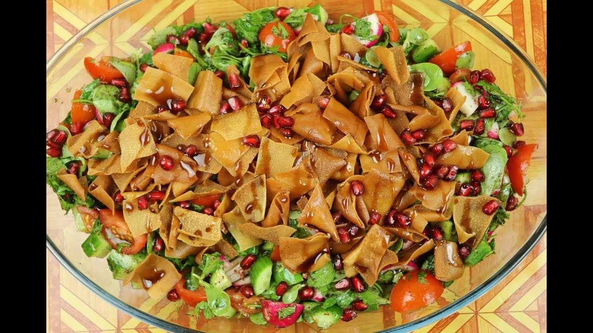

Fattusch
½ Eisbergsalat (oder Römersalat)
½ rote Paprika
1x Gurke
6x Radieschen
2x Lauchzwiebeln
2x Tomaten
frische Minze ( ca. 3 Stiele)
Saft einer Zitrone
1 TL Salt
etwas Olivenöl
1x arabisches Fladenbrot
etwas Öl zum anbraten
Bevor wir beginnen, müssen wir das ganze Gemüse gründlich waschen. Bei Fattusch wird darauf geachtet, dass das ganze Gemüse klein geschnitten wird. Deshalb schneiden wir Salat, Paprika, Gurke, Radieschen und die Tomate in kleine Würfel und geben dies in eine große Schüssel. Die Minzblätter entfernen wir vom Stil und hacken ihn, wie die Petersilie auch, ganz fein. Die Lauchzwiebel schneiden wir in kleine dünne Ringe.